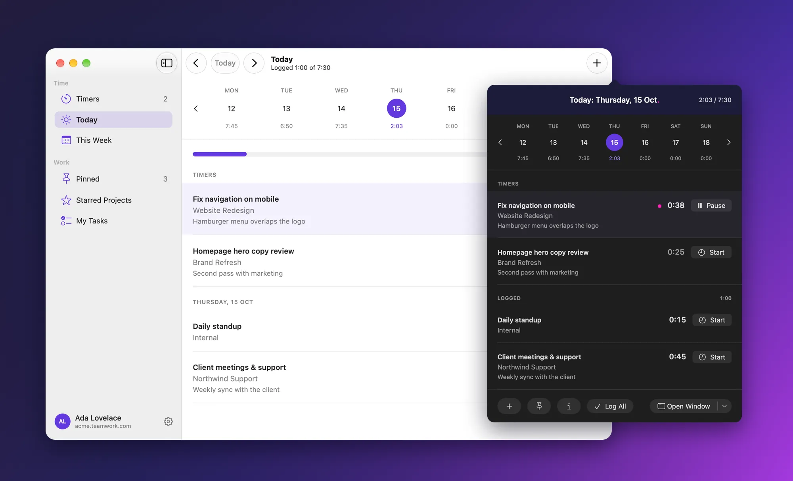
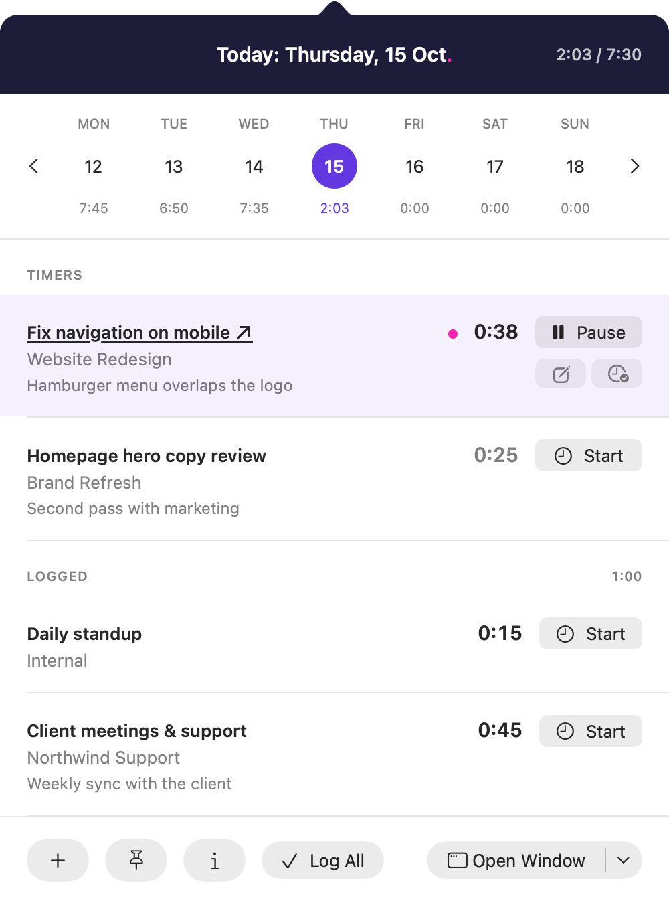
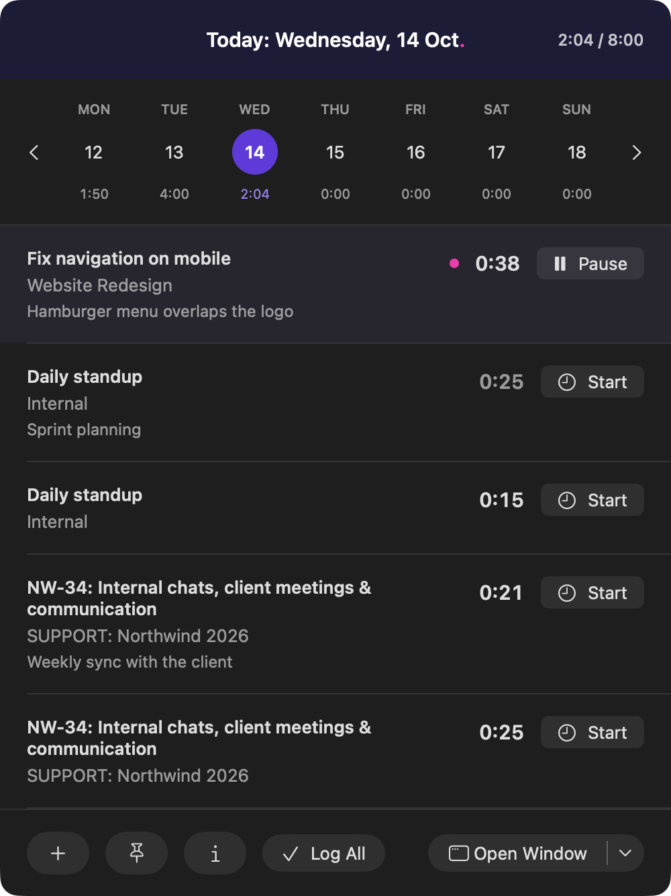
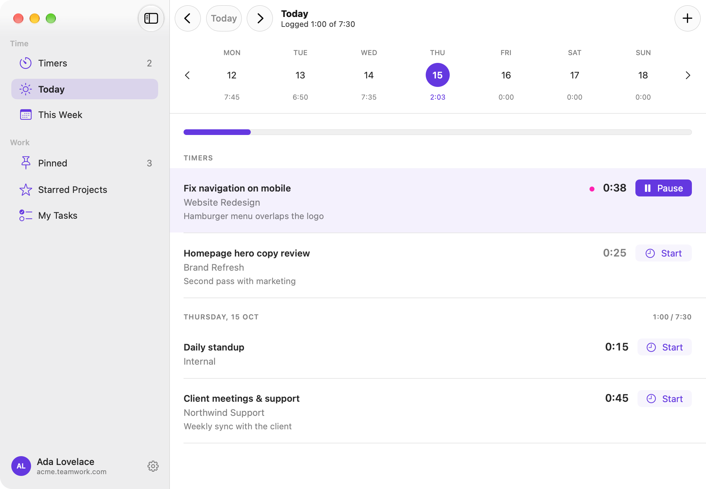
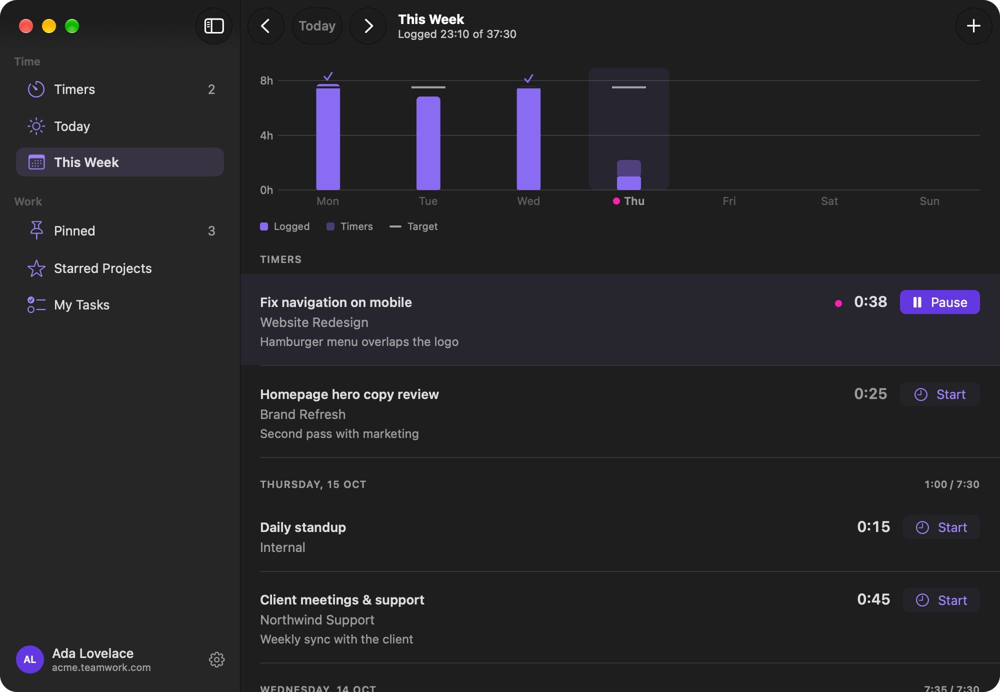
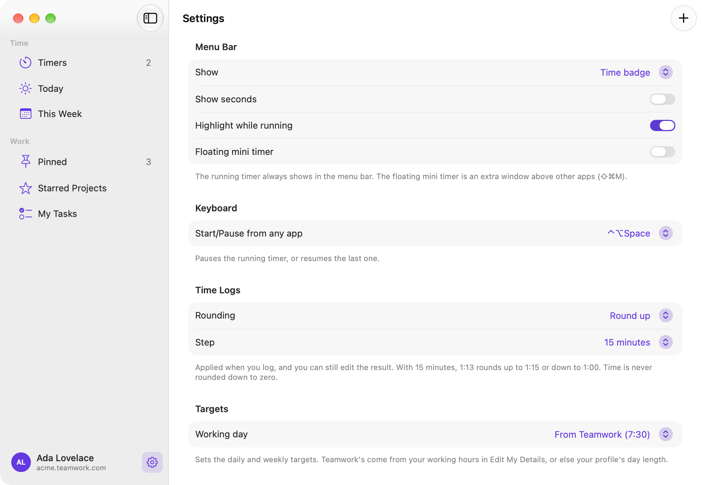

Your Teamwork timers, one click away.
Stint is a small, native Mac app that keeps Teamwork.com time tracking in your menu bar. Start, pause and log time without opening a browser tab, while your timers stay in sync with Teamwork on the web.

Time tracking that stays out of your way
Logging time is easiest when it takes a second. Stint puts Teamwork's own timers in the macOS menu bar, so starting the next task, pausing for lunch or logging the day is a click or a keystroke away.
There's no separate service in between: a timer you start on the web shows up in Stint, and one you start in Stint shows up on the web. Your time lands in Teamwork, where your team and your reports already are.
Your whole day in the menu bar
Click the timer in the menu bar to see today at a glance.
- Running and paused timers, each with Start, Pause, Edit and Log
- The time you've logged today, against your working-day target
- A week strip with each day's total. Press ← and → to move between days.
- Log All sends every timer to Teamwork in one go


A window for the bigger picture
Open the main window for Timers, Today, This Week, Pinned, Starred Projects and My Tasks. Edit a timer's task, notes or tracked time, and fix or delete logged entries, all in one place.

See the week take shape
This Week charts the time you've logged each day against your target. Click a day to jump to its entries. Your target comes from your working hours in Teamwork, or set your own.

Make it yours
Choose how the timer looks in the menu bar: time, task and time, a compact badge, or just an icon. Set a shortcut that starts and pauses from any app, round durations when you log, and pick when Stint should remind you.

Everything you need, nothing you don't
Pinned tasks
Pin the work you repeat and start it from the popover with ⌘1 to ⌘9.
Find any task
Starred projects, tasks due today and recent work come first. Search everything else, or paste a Teamwork task link.
Log with care
Type durations as 1:30, 1.5h or 90m, round to a step you choose, mark the task complete and set billable time.
Edit as you go
Move a running timer to another task, change its notes or tracked time, and edit logged entries later.
Idle detection
Back from a break? Keep the time you were away, or remove it and continue or stop.
Gentle reminders
A nudge when no timer is running, an alert for timers left on too long, and a reminder to log at the end of the day.
Your time goes to Teamwork. Nowhere else.
- Your sign-in is stored in the macOS Keychain.
- Stint talks only to your Teamwork site, and to teamwork.com when you use Teamwork Sign-In.
- No analytics, no tracking, no ads and no servers of our own. We never see your data.
- The source code is public on GitHub, so you can check all of this.
Get Stint
Download Stint.dmgThe latest release from GitHub. Release notes
Requirements
- macOS 26 or later
- A Mac with Apple silicon
- A Teamwork.com account
Current builds aren't notarized by Apple yet, so macOS asks you to approve Stint the first time you open it. Here's how.
Up and running in a minute
- Open
Stint.dmgand drag Stint into Applications. - Open Stint, choose Sign In, and enter your Teamwork site and API token.
- Click the timer in the menu bar and start your first timer.